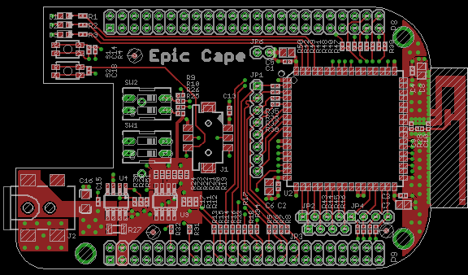

The Epic Cape is a cape for the BeagleBone that adds an 802.15.4 wireless mesh networking interface.

The Epic Cape uses the open source Epic module (http://www.cs.berkeley.edu/~prabal/projects/epic/) which allows the cape to act as a compact egress router for low power sensor networks. The Epic module is fully supported by the open source TinyOS (http://www.tinyos.net) sensor network operating system and features a complete 6lowpan/RPL IPv6 stack (http://docs.tinyos.net/tinywiki/index.php/BLIP_2.0) that allows transmission of IPv6 Packets over IEEE 802.15.4 networks. The Epic Cape will allow you to develop an 802.15.4 wireless sensor network with IPv6 connectivity to each low power mesh endpoint.